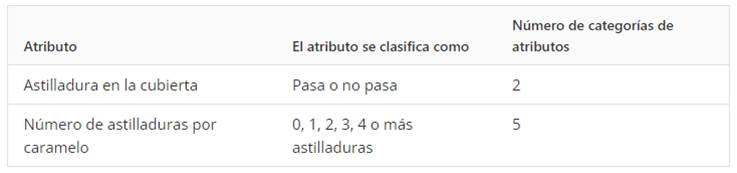

Los datos de atributos son aquellos que tienen una característica (o atributo) de calidad que cumple o no cumple con la especificación del producto. Estas características se pueden categorizar y contar.
Entre los ejemplos de datos de atributos se incluyen organizar y contar el número de imperfecciones de un producto particular (defectos) y el número de partes no conformes (defectuosas).
Ejemplo:
Desea investigar la calidad de una bolsa de M&Ms. Usted podría clasificar cada caramelo por diferentes defectos tales como astilladuras en la cubierta del caramelo, legibilidad de la "m" impresa en cada caramelo, puntos planos o caramelos deformes. Los atributos suelen evaluarse como pasa o no pasa, o se comparan con valores estándar visuales, por lo general con hasta cinco categorías diferentes. Esta tabla muestra datos de atributos que usted puede recopilar con respecto a las astilladuras en la cubierta del caramelo.
